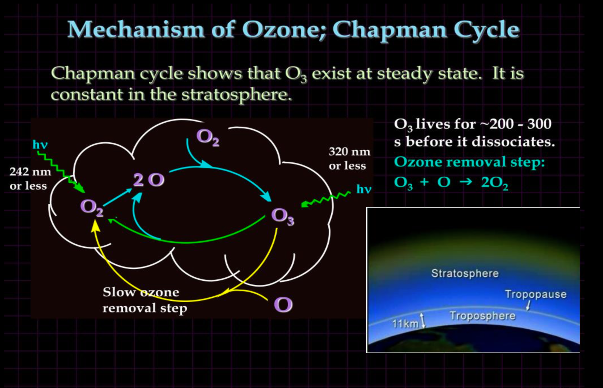

Ozone Cycle
A natural process in the Earth's stratosphere (upper atmosphere) involving the continuous formation and destruction of ozone (O3). Crucial for life on Earth as the ozone layer absorbs most of the harmful ultraviolet (UV) radiation from the sun.
Key Processes:
- Formation of Atomic Oxygen: High-energy UV radiation from the sun breaks apart oxygen molecules (O2) into two individual oxygen atoms (O): O2 + UV → O + O
- Formation of Ozone: These highly reactive single oxygen atoms then collide with other oxygen molecules (O2) to form ozone (O3): O + O2 + M → O3 + M (where 'M' is a third molecule like nitrogen (N2) or oxygen (O2) that absorbs excess energy, stabilizing the ozone molecule).
- Destruction of Ozone (Natural): Ozone (O3) is unstable and naturally breaks down in two main ways:
- Absorption of UV radiation: O3 + UV → O2 + O
- Reaction with atomic oxygen: O3 + O → 2O2
Diagram

The Ozone Layer:
- A region in the stratosphere (approximately 10 to 50 km above the Earth's surface) where the concentration of ozone is relatively high.
- This layer acts as a shield, absorbing most of the harmful UV-B and UV-C radiation from the sun, preventing it from reaching the Earth's surface.
- UV-B radiation can cause skin cancer, cataracts, and damage to plants and marine life. UV-C is even more harmful but is almost completely absorbed by the ozone layer and the atmosphere.
- As a result of the ozone cycle, energy from UV rays is dissipated as heat.
Ozone Depletion (Human Impact):
- Certain human-made chemicals, particularly chlorofluorocarbons (CFCs), halons, and other ozone-depleting substances (ODS), can catalyze the destruction of ozone in the stratosphere.
- These stable chemicals rise into the stratosphere, where they are broken down by UV radiation, releasing chlorine or bromine atoms.
- These halogen atoms act as catalysts in a chain reaction, where a single chlorine atom can destroy thousands of ozone molecules:
- Cl + O3 → ClO + O2
- ClO + O → Cl + O2 (The chlorine atom is regenerated and can destroy more ozone)
- This catalytic destruction leads to a thinning of the ozone layer, commonly referred to as the "ozone hole" (most prominent over the Antarctic).
Consequences of Ozone Depletion:
- Increased levels of harmful UV-B radiation reaching the Earth's surface.
- Increased risk of skin cancer and cataracts in humans.
- Damage to the immune system.
- Harm to terrestrial and aquatic ecosystems, including reduced plant growth and damage to phytoplankton.
- Impacts on air quality.
International Efforts:
- The Montreal Protocol is an international treaty designed to phase out the production and consumption of ozone-depleting substances. It has been largely successful in reducing the rate of ozone depletion.
Written by Kasiban Parthipan